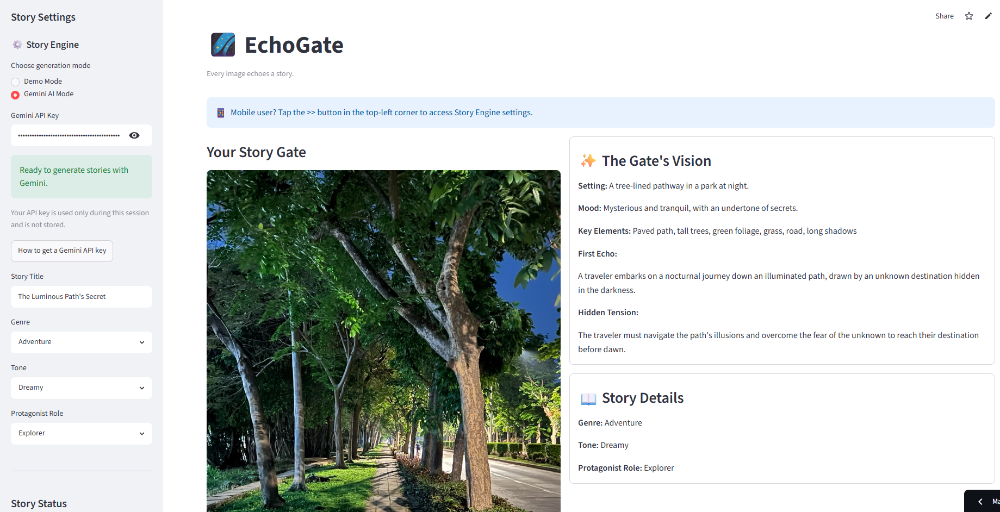

About
AI researcher and builder with a curiosity for complex systems.
I am interested in artificial intelligence, computer vision, weather intelligence, research software, and tools that help people understand difficult ideas more intuitively.
Projects
Featured Work
Skills
Tools and technologies I use.
Python
Streamlit
Machine Learning
Computer Vision
Data Visualization
Research Engineering
Git & GitHub, GitLab
Clean Architecture
Research
Research Journey
2022
Master's Thesis
Short-Term Sun Coverage Prediction Using Cloud Movement Pattern Feature in Photovoltaic Systems
2024
IEEE ECTI-CON 2024 Short-Term Sun Coverage Prediction Using Cloud Movement Pattern Feature in PV Systems
Presented research on short-term solar coverage prediction using sky image analysis and cloud movement patterns.
Writing
Making difficult concepts feel intuitive.
Medium Article
Why the Average Never Tells the Whole Story
An intuitive explanation of expectation, variance, and covariance using simple examples before formulas.
Statistics · Machine Learning · Intuition
Journey
Education and Experience
2026
AI Builder & Future PhD Researcher
Building AI applications, educational tools, and preparing for doctoral research.
2024–2026
Algorithm Engineer
machine learning, image processing, and algorithm development.
2022-2024
Master of Engineering (AI & IoT)
Kasetsart University, Thailand
2019-2020
Junior Software Developer
Web application development using Angular, Django, and Java Spring.
2012-2018
Bachelor of Engineering
Computer Engineering and Information Technology
Contact